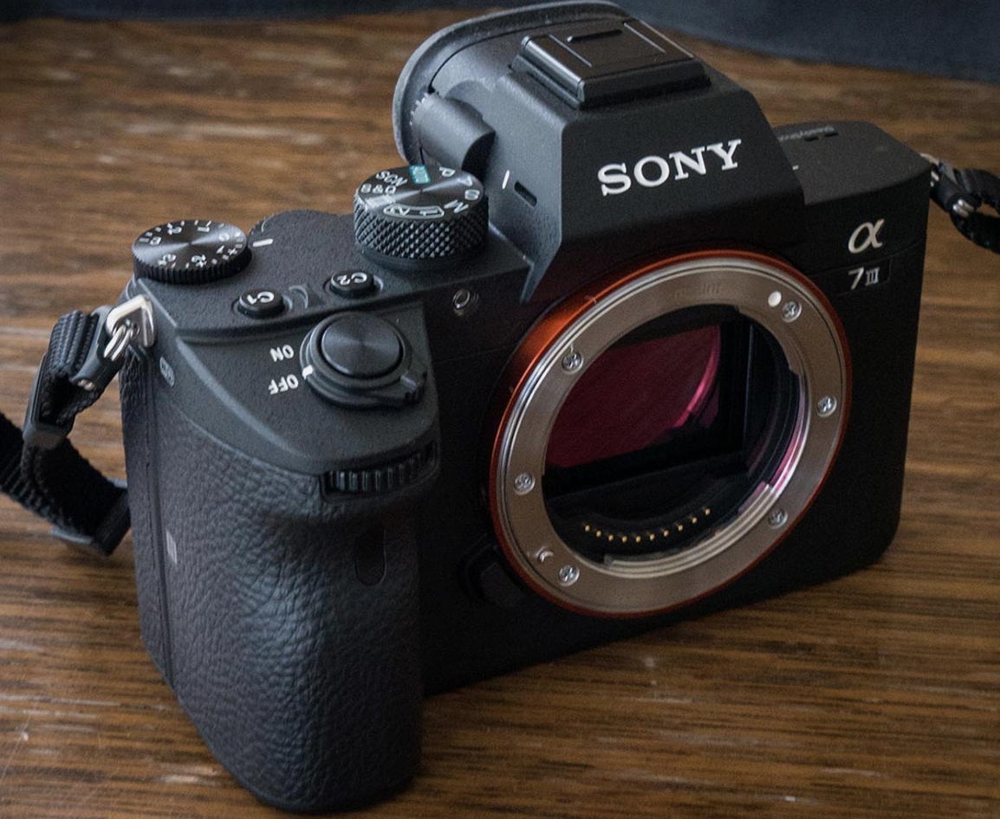
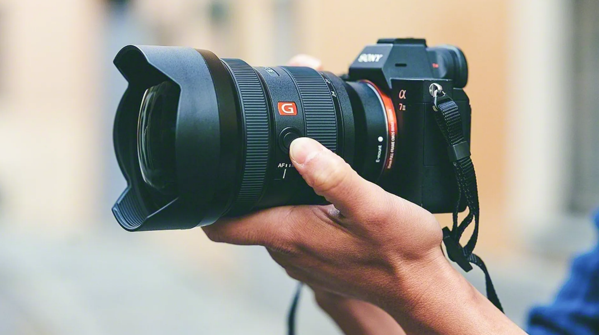
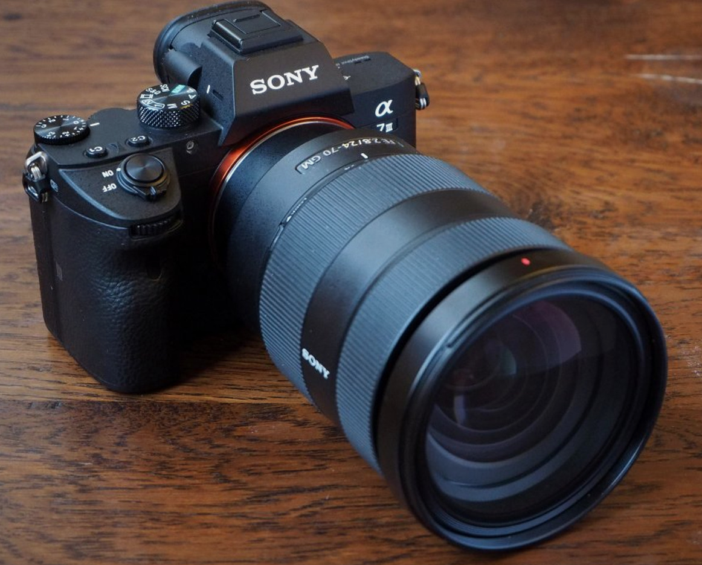

Without lens

FE 85mm

24-70 GM
 Grand Canyon
Grand Canyon
Grand Canyon
Grand Canyon
Last year, I purchased my first mirrorless camera with the intention of learning how to use it and the fundamentals of photography and progressing from there. I had no idea that photography was more complicated than simply turning on the camera and shooting images. I have a lot to learn.
I needed to understand the fundamentals of shutter speed, aperture, ISO, exposure adjustment, and lens selection in order to be a successful photographer. But first, I needed a camera, which I was able to purchase at a great price: the Sony a7 III (model ILCE-7M3). It is a mirrorless, full-frame interchangeable-lens camera. It was revealed as the successor to the Sony 7 II on April 10, 2018.
Because the camera had so many buttons and settings, I was initially concerned. So I went to YouTube to look for educational videos to help me learn the basics. Taking amazing photos entails understanding how to adjust the camera's settings as needed. YouTubers like Jared Polin provide amazing tutorials for beginner photographers like me to help me get the most out of my camera and push it to its limits.
You can follow my journey as I learn how to become a professional photographer by clicking any of the tabs at the top of this page, or If you'd like to join me for a new update on my web blog, please sign up below.